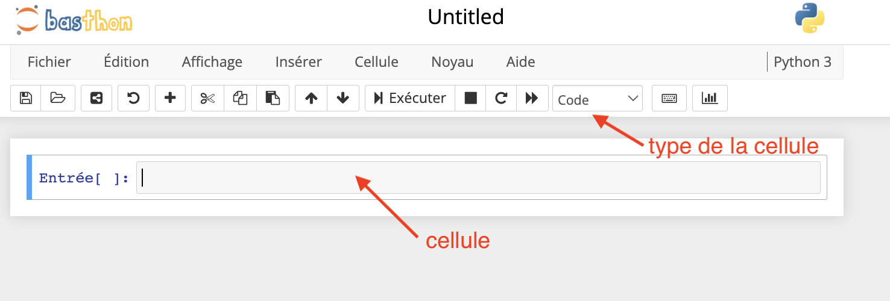
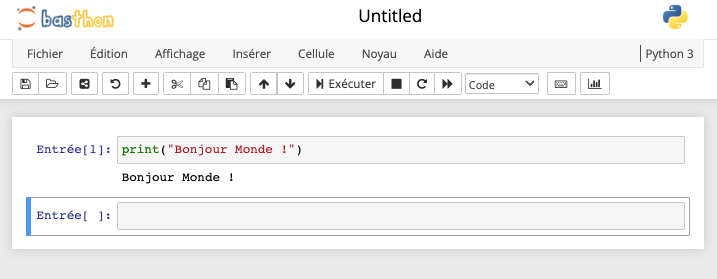
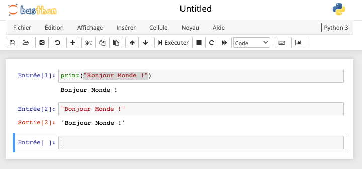
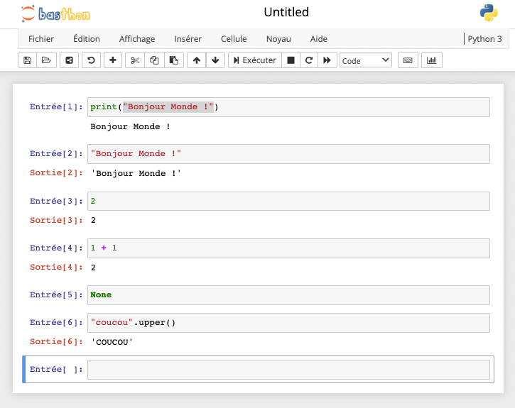
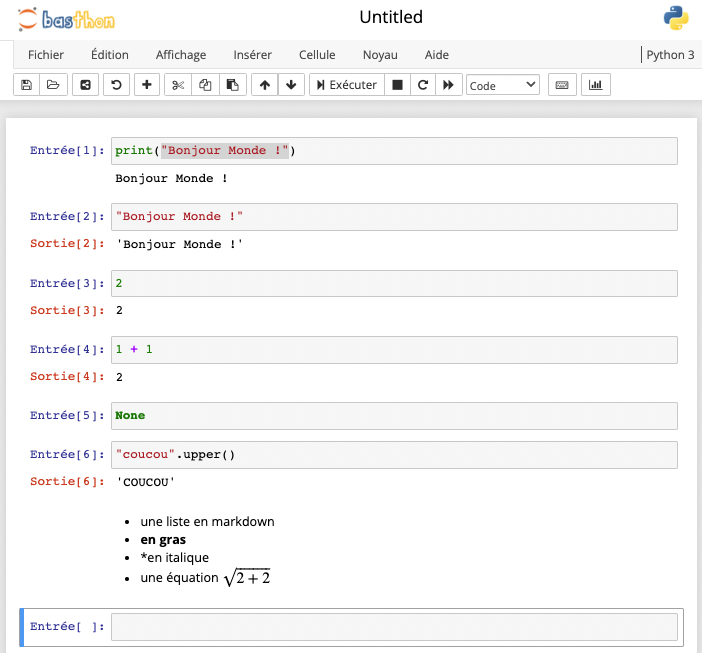
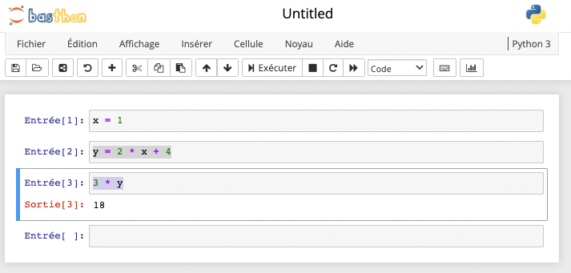
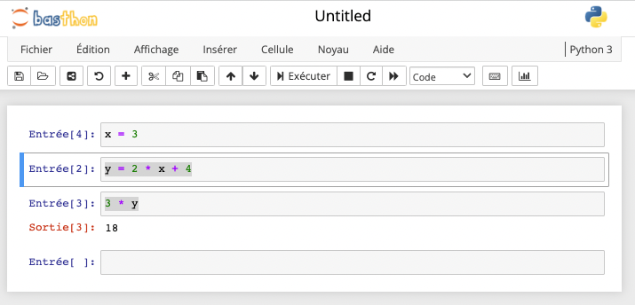

Notebooks
TBD à refaire propre
Utiliser des notebooks pours écrire du code python.
Les notebooks python ont été rendus populaire par la société Jupyter. Stricto sensu, c'est une interface web à IPython (une console python conviviale).
Les Notebooks sont des solutions pratiques lorsque l'on veut exécuter rapidement un petit bout de code ou une série de bouts de codes plus ou moins indépendant : lorsque l'on utilise l'outil informatique pour faire des maths ou de la physique par exemple ; ou encore lorsque l'on fait de la data science.
Plusieurs possibilités pour acceder à des notebook :
- https://basthon.fr/ (qui est géré par l'éducation nationale)
- https://colab.google/ (qui est géré par google)
- installer un environnement virtuel
Leur utilisation est particulièrement adaptée pour rédiger et partager des comptes-rendus.
Basthon
Il existe beaucoup de solutions pour utiliser un Notebook sur internet. Pour un usage scolaire ou une découverte https://basthon.fr/
Regardons à quoi ça correspond :
Allez sur le site https://basthon.fr/ et choisissez menu Notebook > python
Vous allez vous retrouver sur le site https://notebook.basthon.fr/
Vous devriez avoir quelque chose du genre :

Si votre notebook n'est pas vide, recréez en un nouveau : menu Fichier > Nouveau Notebook > Python 3
Écrivons notre premier programme :
- Dans la cellule votre notebook écrivez :
print("Bonjour Monde !") - assurez vous que le type de la cellule soit bien code
- cliquez sur le bouton Exécuter
Vous devriez avoir quelque chose du genre :

Félicitations ! vous avez écrit votre premier notebook !
Colab
https://colab.research.google.com : pour un usage professionnel. Mais nécessite un compte google pour fonctionner.
TBD
- modules
- données
- soucis : tout refaire à chaque fois si module à nous et surtout ce que'on fait est chez google.
Environnement virtuel
TBD : la solution modulable.
Usages
L'utilisation d'un notebook est très adapté aux usages interactifs, car on voit directement le résultat de l'exécution de quelques lignes de codes. C'est pourquoi l'usage des notebook est généralisé :
- en data science
- dans l'enseignement
- dans la production de rapport
En revanche, un notebook n'est pas adapté du tout à l'écriture de programmes conséquents car il ne possède aucun des outils de développement requis.
L'usage d'un notebook est adapté lorsque notre code est destiné à être lu par des humains plutôt qu'un ordinateur.
Utiliser
Code d'une cellule
Une cellule est constituée d'une ou plusieurs lignes de code qui peuvent être exécutées.
Appuyer sur la touche entrée ajoute une ligne à la cellule, ne l'exécute pas.
A l'exécution, elles seront envoyées à l'interpréteur et une sortie (si elle existe) est affichée.
Sortie d'une cellule
Après l'exécution du code d'une cellule, son résultat est présenté en dessous ce celle-ci. De façon plus précise :
Le résultat de la cellule est la valeur de la dernière ligne.
La valeur de la dernière ligne est souvent le résultat d'une fonction, mais cela peut tout aussi bien être juste un objet :
Dans la deuxième cellule votre notebook écrivez : "Bonjour Monde !" puis exécutez là.
Vous devriez avoir quelque chose du genre :

La deuxième cellule contient une chaîne de caractère, elle est affichée comme sa sortie après exécution.
La différence avec la sortie de la première cellule est que print est une fonction qui ne rend rien, elle ne fait qu'afficher des choses à l'écran.
>>> x = print("Bonjour monde !")
Bonjour monde !
>>> print(x)
None
>>> Ce qui est affiché n'est donc pas son retour, mais son action (afficher des choses) : il n'y ait pas de quotes autour de Bonjour Monde ! : ce n'est pas une chaîne de caractère python (comparez avec la sortie de la deuxième cellule qui elle est une chaîne de caractères python.)
Essayons de rendre tout ça un peu plus clair :
Dans un notebook :
- tapez
2dans une cellule puis exécutez là. - tapez
1 + 1dans une cellule puis exécutez là. - tapez
Nonedans une cellule puis exécutez là. - tapez
"coucou".upper()dans une cellule puis exécutez là.
Vous devriez avoir quelque chose du genre :

- La valeur de la cellule contenant
2est un entier valant 2 - La valeur de la cellule contenant
1 + 1est un entier valant 2 - La valeur de la cellule contenant
Noneest rien du tout et n'est donc pas affiché - La valeur de la cellule contenant
"coucou".upper()est le résultat de la méthodeupper()appliquée à la chaîne"coucou": c'est la chaîne de caractère"COUCOU"
Type de cellules
Une cellule n'est pas forcément du code. Si vous cliquez sur le menu déroulant type de la cellule (il devrait y avoir marqué "code"), vous pouvez changer le type de la cellule en :
- code
- markdown
- texte brute
- titre
Les 2 types utilisés sont :
- code : pour écrire du python
- markdown : pour écrire du markdown
L'intérêt est qu'avec le markdown vous pouvez introduire ou commenter le résultat de cellules de code.
Dans une cellule changez son type en markdown, puis écrivez le code suivant :
* une liste en markdown
* **en gras**
* *en italique*
* une équation $\sqrt{2+2}$Puis exécutez la cellule.
Vous devriez avoir quelque chose du genre :

Lorsque l'on exécute une cellule au format markdown, le code disparaît et est remplacé par sa version compilée.
Interpréteur
Le notebook n'est une interface à un interpréteur, nommé noyau.
Variables
Comme le noyau est unique, les variables définies dans une cellule peuvent être utilisées dans d'autres cellules.
Dans un nouveau notebook :
- dans la première cellule, écrivez le code
x = 1puis exécutez la cellule - dans la seconde cellule, écrivez le code
y = 2 * x + 4puis exécutez la cellule - dans la troisième cellule, écrivez le code
3 * ypuis exécutez la cellule
Vous devriez obtenir ceci :

Une affectation est considérée comme ne rendant rien. Il n'y a donc pas de sortie d'affichée si la la dernière ligne d'une cellule est une affectation.
Ordre d'exécution
Le numéro entre crochet à gauche de la cellule est son ordre d'exécution. En re-exécutant une cellule, elle repasse dans l'interpréteur et son ordre d'exécution va changer.
Dans la figure ci-après, on a remplacé le code de la cellule d'ordre deux par x = 3 puis on l'a re-exécuté. Son ordre d'exécution vaut maintenant 4 et non plus 1 :

Les autres cellules ne sont pas exéctuées, et donc sans ordre d'exécution, on aurait l'impresion que le notebook est faux : si $x = 3$ $3 y$ devrait valoir $30$ et non pas 18...
Lorsque vous changez la valeur de cellules qui ont déjà été exécutées, le reste de votre notebook n'est plus valable !
Il faut alors re-exécuter toutes les cellules : Menu cellule > Exécuter tout